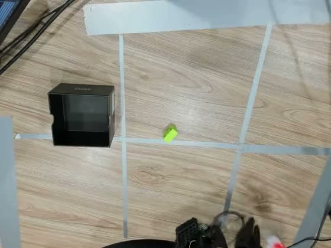
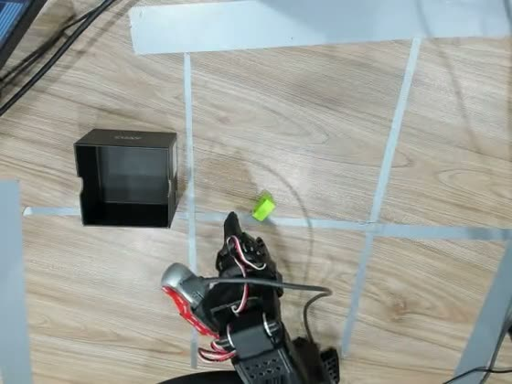
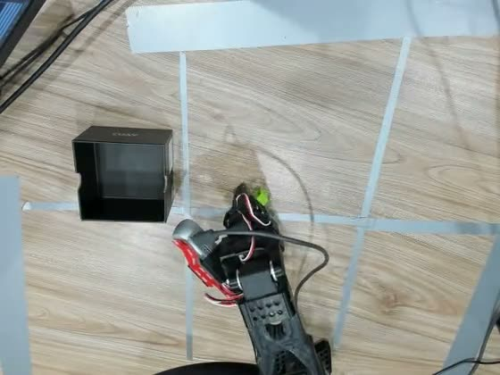
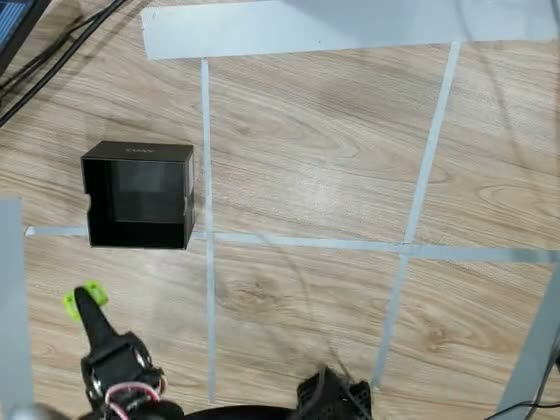
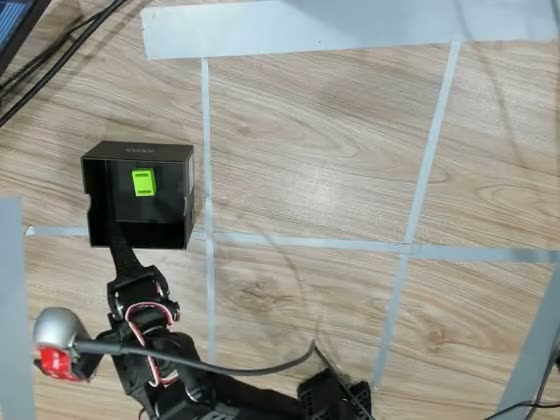

Robot learning · physical experiment
Teaching a Robot to Pick and Place Through Demonstration
A physical study of how demonstration structure affects imitation learning on a SO-101 robot arm.
I used the Hugging Face LeRobot framework with a physical SO-101 leader–follower arm to collect demonstrations and train an ACT policy for cube pick-and-place. I studied how the cube's position and orientation in the demonstrations affect what the policy learns.
Watch the experiment Dataset Trained policy LinkedIn
- SO-101
- Physical leader–follower robot
- 76
- Position–orientation configurations
- 19
- Distinct spatial locations
- 4
- Orientations at every location
- ~30K
- Frames in final structured dataset
The question
A Simple Task, A More Interesting Question
The task was deliberately simple: pick up a cube and place it inside a box.
Rather than focusing on developing a new model, I used the SO-101 as a physical testbed to investigate a more practical question:
What happens when we change the structure of the demonstrations given to an imitation-learning policy?
I collected demonstrations in three progressively different ways, keeping the overall manipulation task the same while changing how the object was distributed across the workspace.
The robot
The Physical Setup
The experiments were performed on a physical SO-101 leader–follower arm using the Hugging Face LeRobot framework.
A human operator controlled the leader arm while the follower reproduced the demonstrated motion. The demonstrations were recorded with dual-camera observations together with the robot state and action trajectory.
The task
Pick → Grasp → Place
The manipulation objective was to pick up a green cube and place it inside a box.
Although the task is simple, successful execution requires the policy to learn where the object appears, how it is oriented, how to approach it, and how to align the gripper for grasping.





Frames from a single autonomous evaluation rollout of the final ACT policy (top camera).
Three data-collection experiments
Same Robot. Same Task. Different Demonstrations.
The key variable I changed was not the robot or the task, but the structure of the demonstrations.
I progressively moved from unstructured placement to spatially structured demonstrations and finally to structured position-and-orientation variation.
Experiment 01
Unstructured Placement
The first demonstrations were collected with the cube placed around the workspace without explicitly defining a structured set of object locations.
The resulting ACT policy struggled to reliably locate and grasp the cube.
This made it difficult to reason about the source of the failure because the spatial distribution of the demonstrations itself was not clearly defined.
Outcome The policy did not reliably locate or grasp the cube.
This motivated the next experiment: explicitly structuring the workspace.
Schematic. Cube positions were not recorded.
- 50 + 51
- episodes, two sessions
- 26,519 + 33,370
- frames
On Hugging Face Dataset: pick_and_place Dataset: picknplace Policy: act_pick_and_place_policy Policy: act_picknplace_policy
Experiment 02
Six-Grid Placement
I divided the workspace into six spatial regions and distributed the cube placements across those regions. The box stayed in a fixed cell while the cube was placed across the others.
101 demonstrations · 55,001 frames
The policy learned some coarse spatial structure: the robot could often move toward the correct cell. But grasping remained unreliable.
This suggested that simply increasing the number of demonstrations was not enough. The demonstrations were spread across a larger region of the workspace, reducing the number of examples available for each individual region.
Outcome Coarse localization, but unreliable grasping.
Schematic. The box occupies one cell; cube placements are spread across the other cells.
On Hugging Face Dataset: pick_place_box_grid Policy: act_pick_place_box_grid
Experiment 03
Structured Position + Orientation
After observing the limitations of the first two datasets, I constrained the experiment further.
The workspace was restricted to a single grid cell. Within that single grid cell, I defined 19 distinct spatial locations, marked on a transparent plastic sheet laid over the cell as a positioning template, so every demonstration used those exact positions.
At each of those 19 locations, the cube was demonstrated in four different orientations:
Vertical · 45° right · 45° left · Horizontal
Select a location
Location 1
Four demonstrations at this same spatial location:
1 location → 4 orientations
Every one of the 19 locations has all four orientations. Hover or tap any location on the map.
Schematic: the arrangement of the 19 marks is illustrative; the counts are exact.
The final dataset contained 76 demonstrations and approximately 30,000 frames (30,110).
Outcome Reliable pick-and-place within the demonstrated cell.
On Hugging Face Dataset: pick_place_1_grid Dataset visualization Policy: act_pick_place_1_grid_policy Evaluation visualization
Key observation
ACT Learned the Demonstrated Task Space
The most important observation from the experiments was where the policy succeeded, and where it did not.
When the cube was placed in regions represented by the demonstrations, the ACT policy could learn the corresponding manipulation behavior.
When the cube was moved into spatial regions that were not represented in the demonstrations, the policy did not reliably generalize to those regions.
This suggested that, in this experimental setup, the learned behavior was strongly influenced by the distribution of demonstrated states.
Demonstrations cover one region.
Demonstrated region → learned behavior
Unseen region → unreliable behavior
The policy did not automatically acquire reliable behavior across the entire workspace simply because it had seen the task performed somewhere within it.
An empirical observation from this physical setup and these datasets, not a general claim about ACT.
More Frames Did Not Automatically Mean Better Behavior
Six-grid dataset
101 demonstrations
55,001 frames
Demonstrations distributed across six spatial regions.
Structured dataset
76 demonstrations
~30,000 frames
19 locations within one grid × 4 orientations at every location.
The structured dataset was smaller in total frame count than the six-grid dataset, yet produced substantially more reliable behavior within its demonstrated region.
This shifted the focus from simply collecting more frames toward understanding where and how demonstrations cover the task space.
Why orientation?
Orientation Was a Separate Bottleneck
Spatial position was not the only variable affecting the learned behavior.
The cube could also appear at different orientations. A policy trained predominantly around one orientation can become tied to that particular grasp configuration.
I therefore introduced explicit orientation variation into the structured demonstrations.
Crucially, the four orientations were not distributed randomly across the dataset. Every one of the 19 spatial locations contained all four orientations.
This allowed the experiment to separate two forms of coverage:
Position
19 distinct locations
Where is the object?
Orientation
4 orientations at every location
How is the object presented?
19 × 4 = 76 position–orientation configurations
Four Orientations at the Same Location
The same four orientations were demonstrated at every one of the 19 spatial locations.
Training
Training the ACT Policy
The policies were trained using the Hugging Face LeRobot framework and ACT (Action Chunking Transformer), an existing policy architecture available in LeRobot.
The final ACT policy was trained locally on an RTX 5090 using dual-camera observations, a ResNet-18 backbone, batch size 8, and 100,000 training steps. The ACT policies for the earlier datasets used the same architecture, backbone and number of training steps, so the demonstrations were the main variable that changed between experiments.
- Framework
- Hugging Face LeRobot
- Policy
- ACT
- Dataset
- pick_place_1_grid
- Demonstrations
- 76
- Frames
- 30,110 at 30 fps
- Configurations
- 19 locations × 4 orientations
- Observations
- Top + wrist camera, joint state
- Vision backbone
- ResNet-18
- Batch size
- 8
- Training steps
- 100,000
- Hardware
- Local RTX 5090
Physical evaluation
From Demonstrations to Autonomous Behavior
The learned policy was deployed on the physical SO-101 rather than evaluated only through training metrics.
During successful rollouts, the robot independently:
located the cube → approached it → oriented the gripper → grasped it → moved to the box → placed the cube inside
Research direction
From ACT to Vision-Language-Action
The observations from the ACT experiments motivated a broader question:
Can pretrained Vision-Language-Action models generalize beyond the specific configurations represented in physical demonstrations?
I therefore extended the experiments toward VLA policies, including SmolVLA. I fine-tuned the 0.5B SmolVLA policy on the six-grid demonstration dataset.
The physical evaluation is intended to test whether pretrained multimodal representations provide stronger generalization across object placements than the behavior observed with the ACT policy.
Status Physical evaluation is ongoing.
On Hugging FacePolicy: smolvla_pick_place_box_grid
Open source
Data and Policies
The experiments are accompanied by publicly released datasets and trained policy checkpoints so that the demonstrations and learned models can be inspected independently.
Datasets
pick_place_1_grid76 episodes · 30,110 frames · dual cameraExperiment 03 · 19 locations × 4 orientations
pick_place_box_grid101 episodes · 55,001 framesExperiment 02 · six-grid placement
eval_pick_place_1_grid1Evaluation rolloutsPhysical evaluation trajectories · 9 episodes
pick_and_place50 episodes · 26,519 framesExperiment 01 · unstructured
picknplace51 episodes · 33,370 framesExperiment 01 · unstructured
Trained policy checkpoints
What I learned
Demonstration Coverage Matters
The most important lesson from the experiment was that imitation learning is not only about the amount of data, it is also about the coverage and structure of the demonstrations.
In this physical experiment, two dimensions became particularly important:
Position
Where the object appears
Orientation
How the object is presented
Unseen spatial regions remained difficult for the learned ACT policy, while explicitly introducing multiple orientations at each demonstrated position helped remove orientation as a separate constraint on the grasp behavior.
Explore the datasets View trained policies Watch the experiment Back to all projects
Also on LinkedIn. All datasets and checkpoints: huggingface.co/Syed-Furqan.